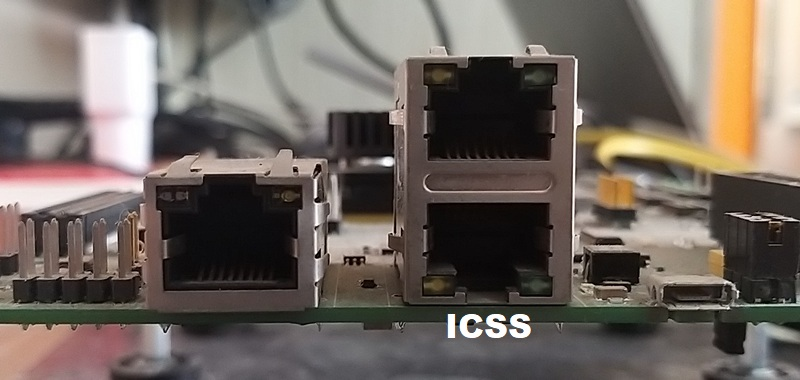

Introduction
The example is an HSR/PRP (High Availability Seamless Redundanc/Parallel Redundancy Protocol) Dual Attached Node demo application using LwIP stack.HSR and PRP are actually two separate examples which are available in the same package. They use the same files and based on the defined MACRO the application is taken. HSR and PRP are zero downtime industrial redundancy protocol that operate at Layer 2 and use commercial off-the-shelf Ethernet communication chips and physical media.HSR has a header attached to it that makes it incompatible with standard switches and routers but PRP can be supported using traditional switches, PRP has trailer attached to standard ethernet frames and can be supported using traditional switches. HSR and PRP is mainly used in the substation automation market and the target applications use IEC 61850 protocols. This application does not provide any IEC 61850 integrated examples but it’s easy to integrate one given the transparent nature of HSR/PRP implementation.
- The implementation consists of
- Note
- The work-around for issue "i2329 - MDIO: MDIO interface corruption (CPSW and PRU-ICSS)" (described in AM64x/AM243x Processor Silicon Revision 1.0, 2.0 (Rev. E)) is available in this release. Please see PRU-ICSS Firmware for MDIO Manual Mode for more details.
Supported Combinations
| Parameter | Value |
| CPU + OS | r5fss0-0_freertos |
| ICSSG | ICSSG1 |
| Toolchain | ti-arm-clang |
| Board | am64x-evm |
| Example folder | examples/industrial_comms/hsr_prp_demo |
Steps to Run the Example
Build the example
- When using CCS projects to build, import the CCS project for the required combination and build it using the CCS project menu (see Using SDK with CCS Projects).
- When using makefiles to build, note the required combination and build using make command (see Using SDK with Makefiles)
HW Setup
- Note
- Make sure you have setup the EVM with cable connections as shown here, EVM Setup. In addition do below steps.
AM64X-EVM
- Connect a ethernet cable to the EVM from host PC as shown below

Ethernet cable for ICSS based ethernet
Run the example
- Attention
- If you need to reload and run the example again, EVM power-cycle is MUST.
- Launch a CCS debug session and run the example executable, see CCS Launch, Load and Run
- You will see logs in the UART terminal as shown in the next section.
- Note the IP address seen in the log, this is what we will use to communicate with the EVM.
- Note
- HSR/PRP RGMII example not tested.
UART Menu
- The application has a built in UART console menu. It allows the user to perform the following tasks :
- View HSR/PRP statistics - Allows user to see number of packets forwarded to host, number of duplicates, number of packets transmitted by the host to the LRE (Link Redundancy Entity).
- View HSR/PRP LRE statistics - Allows user to see the stats reported by LRE (Link Redundancy Entity).
- View HSR/PRP Configuration - Allows user to see the configuration
- View HSR/PRP Node Table - User can see the node table contents which keeps a track of all devices on the network which send HSR/PRP Supervision frames. Device MAC ID, table entry index can be viewed.
- Configure Multicast filter - User can configure the multicast filtering support using a UART driven submenu.
- Configure VLAN filter - User can configure the VLAN filtering support using a UART driven submenu.
- Assign an IP address - The IP address is stored at a fixed location in SPI flash at the offset defined by SPI_EEPROM_DEVICEIP_OFFSET. This IP address is taken at startup and user can also change the IP address
- View PTP status - Shows basic PTP/1588 parameters like peer delay, clock jitter, absolute time and port on which receiver is connected. All values are in nanoseconds wherever applicable.
- Print CPU Load - Prints CPU load on the UART console
- Configure storm prevention - User can configure(enable/disable) the storm prevention and set the credits indivdually for UC, BC and MC traffic.
Sample Output
HSR Application
Starting lwIP, local interface IP is 192.168.2.12
[LWIPIF_LWIP]Link is down[LWIPIF_LWIP] Interface layer handle is Initialised
[LWIPIF_LWIP] NETIF INIT SUCCESS
status_callback==UP, local interface IP is 192.168.2.12
UDP server listening on port 5001
HSR Sample application running
Assigned IP : 192.168.2.12
Mac Id : 70:ff:76:1d:ec:f6
IP Address : 192.168.2.12
Device config : HSR MODE H
HSR/PRP Application Menu Options. Press key (Upper/Lower)
*******************************************
S : Show Statistics
L : Show LRE Statistics
C : Show HSR/PRP Configuration
N : Show Ring members/Node Table
M : Multicast filter handling
V : VLAN filter handling
E : Print CPU Load
I : Assign IP address
P : Show PTP/1588 status
R : Run Rx/Tx test
X : To perform DUT side settings
H : Help menu. Shows details on all the options
********************************************
link_callback==UP
PRP Application
Mode: MII
Starting lwIP, local interface IP is 192.168.1.10
[LWIPIF_LWIP] Interface layer handle is Initialised
[LWIPIF_LWIP] NETIF INIT SUCCESS
status_callback==UP, local interface IP is 192.168.1.10
PRP Sample application running
Assigned IP : 192.168.1.10
Mac Id : 70:ff:76:1e:30:5c
HSR/PRP Application Menu Options. Press key (Upper/Lower)
*******************************************
S : Show Statistics
L : Show LRE Statistics
C : Show PRP Configuration
N : Show Ring members/Node Table
M : Multicast filter handling
V : VLAN filter handling
E : Print CPU Load
I : Assign IP address
P : Show PTP/1588 status
R : Run Rx/Tx test
X : To perform DUT side settings
H : Help menu. Shows details on all the options
********************************************
link_callback==UP
IP Configuration
- The example starts off with stack being initialised with a static IP stored in EEPROM or from default IP in application code. The HSR/PRP UART menu gives user ability to change IP Address via terminal using steps mentioned below.
HSR/PRP Application Menu Options. Press key (Upper/Lower)
*******************************************
S : Show Statistics
L : Show LRE Statistics
C : Show PRP Configuration
N : Show Ring members/Node Table
M : Multicast filter handling
V : VLAN filter handling
E : Print CPU Load
I : Assign IP address
P : Show PTP/1588 status
R : Run Rx/Tx test
X : To perform DUT side settings
H : Help menu. Shows details on all the options
********************************************
i
Type IP Address and hit Enter: 192.168.1.11
Successfully assigned new IP address
Assign IP address...completed
IP Address : 192.168.1.11
Device config : PRP
Communicate with the EVM using ethernet
- Firstly you can try to reach the EVM using ping as shown below, using a command shell on the host PC
> ping 192.168.1.10
Troubleshooting issues
- If you see a valid MAC address and address and
link_callback==DOWN is seen then
- check the ethernet cable if it is properly connected
See Also
HSR_PRP(High-availability seamless Redundancy/Parallel Redundancy Protocol) FWHAL


 1.8.20
1.8.20